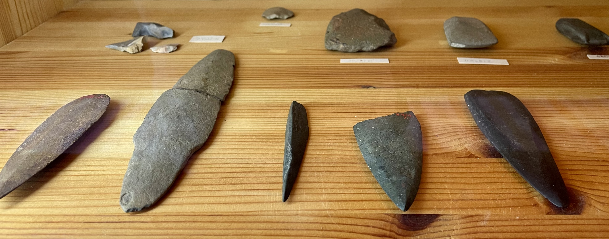

Exploramos la Prehistoria: Investigación y excavación arqueológica
|
Curso: 1.º ESO Materia: Geografía e Historia |
¿Te has parado a pensar cómo eran las herramientas en la Prehistoria?
¿Quién las fabricaba? ¿Para qué servían? ¿Cómo evolucionaron con el paso del tiempo?
A lo largo de este proyecto, tendrás que dar respuesta a estas y muchas otras preguntas.
Nos convertiremos en auténticos investigadores y arqueólogos: exploraremos, analizaremos y pondremos en práctica nuestros conocimientos a través de diferentes actividades.
¿Te atreves a descubrirlo de forma práctica?
¿Serás capaz de investigar, analizar y crear tu propio producto digital?
¡Comenzamos esta aventura en la Prehistoria!

Imagen: Prehistoric stone tools from Pihtipudas, Finland (2024) – Autor: Limelightangel – Fuente: Wikimedia Commons – Licencia: CC0 1.0 (dominio público)